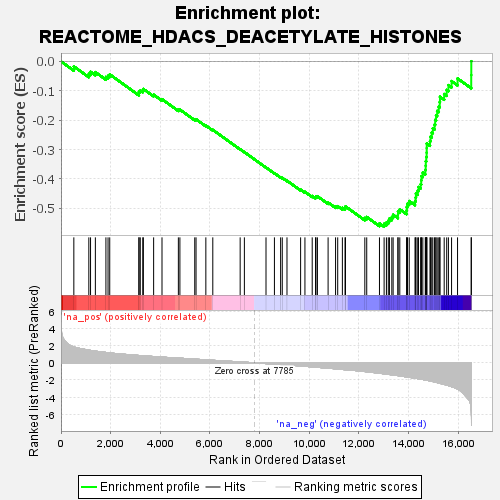
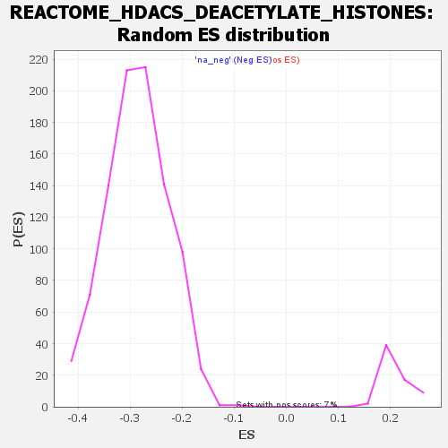

| | | Dataset | all_genes |
| Phenotype | NoPhenotypeAvailable |
| Upregulated in class | na_neg |
| GeneSet | REACTOME_HDACS_DEACETYLATE_HISTONES |
| Enrichment Score (ES) | -0.56248206 |
| Normalized Enrichment Score (NES) | -1.9645809 |
| Nominal p-value | 0.0 |
| FDR q-value | 0.0010861545 |
| FWER p-Value | 0.023 |
Table: GSEA Results Summary

Fig 1: Enrichment plot: REACTOME_HDACS_DEACETYLATE_HISTONES
Profile of the Running ES Score & Positions of GeneSet Members on the Rank Ordered List
| SYMBOL | RANK IN GENE LIST | RANK METRIC SCORE | RUNNING ES | CORE ENRICHMENT | | 1 | CHD3 | 517 | 1.858 | -0.0171 | No |
| 2 | ARID4A | 1121 | 1.474 | -0.0424 | No |
| 3 | ARID4B | 1190 | 1.446 | -0.0354 | No |
| 4 | HDAC8 | 1384 | 1.367 | -0.0366 | No |
| 5 | SAP18 | 1809 | 1.212 | -0.0530 | No |
| 6 | KDM1A | 1895 | 1.185 | -0.0491 | No |
| 7 | HDAC2 | 1963 | 1.161 | -0.0442 | No |
| 8 | RBBP4 | 3138 | 0.858 | -0.1090 | No |
| 9 | REST | 3142 | 0.858 | -0.1025 | No |
| 10 | MTA3 | 3193 | 0.846 | -0.0991 | No |
| 11 | RBBP7 | 3294 | 0.823 | -0.0988 | No |
| 12 | SUDS3 | 3317 | 0.818 | -0.0938 | No |
| 13 | HDAC3 | 3731 | 0.732 | -0.1133 | No |
| 14 | RCOR1 | 4068 | 0.665 | -0.1286 | No |
| 15 | GATAD2A | 4727 | 0.547 | -0.1644 | No |
| 16 | MTA2 | 4789 | 0.536 | -0.1640 | No |
| 17 | PHF21A | 5387 | 0.430 | -0.1970 | No |
| 18 | GATAD2B | 5439 | 0.419 | -0.1969 | No |
| 19 | SAP30L | 5834 | 0.349 | -0.2181 | No |
| 20 | NCOR1 | 6114 | 0.297 | -0.2328 | No |
| 21 | HDAC1 | 7216 | 0.107 | -0.2989 | No |
| 22 | CHD4 | 7386 | 0.078 | -0.3086 | No |
| 23 | GPS2 | 8257 | -0.084 | -0.3609 | No |
| 24 | SAP30 | 8596 | -0.148 | -0.3803 | No |
| 25 | MTA1 | 8846 | -0.196 | -0.3939 | No |
| 26 | H2AC18 | 8912 | -0.208 | -0.3963 | No |
| 27 | TBL1XR1 | 9102 | -0.247 | -0.4058 | No |
| 28 | H4C11 | 9651 | -0.364 | -0.4364 | No |
| 29 | TBL1X | 9825 | -0.400 | -0.4438 | No |
| 30 | H4C8 | 10118 | -0.469 | -0.4579 | No |
| 31 | H4C14 | 10252 | -0.501 | -0.4622 | No |
| 32 | BRMS1 | 10270 | -0.505 | -0.4593 | No |
| 33 | H2BC9 | 10328 | -0.517 | -0.4588 | No |
| 34 | HMG20B | 10758 | -0.619 | -0.4801 | No |
| 35 | H4C1 | 11059 | -0.692 | -0.4930 | No |
| 36 | MBD3 | 11145 | -0.715 | -0.4927 | No |
| 37 | H2BC21 | 11333 | -0.770 | -0.4981 | No |
| 38 | H4C13 | 11441 | -0.796 | -0.4985 | No |
| 39 | H2AC25 | 11458 | -0.802 | -0.4933 | No |
| 40 | H3C4 | 12237 | -1.014 | -0.5328 | No |
| 41 | NCOR2 | 12314 | -1.038 | -0.5294 | No |
| 42 | H2BC12 | 12827 | -1.214 | -0.5512 | No |
| 43 | H4C12 | 13014 | -1.279 | -0.5526 | Yes |
| 44 | H2BC17 | 13107 | -1.313 | -0.5481 | Yes |
| 45 | H3C6 | 13182 | -1.345 | -0.5422 | Yes |
| 46 | H2BC14 | 13229 | -1.363 | -0.5345 | Yes |
| 47 | H2BC3 | 13325 | -1.395 | -0.5295 | Yes |
| 48 | H4C2 | 13377 | -1.412 | -0.5218 | Yes |
| 49 | H2BC13 | 13571 | -1.489 | -0.5220 | Yes |
| 50 | H2BC11 | 13574 | -1.491 | -0.5106 | Yes |
| 51 | H3C12 | 13646 | -1.524 | -0.5032 | Yes |
| 52 | H2BC10 | 13921 | -1.634 | -0.5073 | Yes |
| 53 | H2BC5 | 13928 | -1.637 | -0.4950 | Yes |
| 54 | H4C5 | 13957 | -1.648 | -0.4840 | Yes |
| 55 | H3C3 | 14026 | -1.683 | -0.4752 | Yes |
| 56 | H2BC18 | 14259 | -1.793 | -0.4755 | Yes |
| 57 | H4C9 | 14285 | -1.801 | -0.4631 | Yes |
| 58 | H2BC7 | 14296 | -1.805 | -0.4498 | Yes |
| 59 | H3C7 | 14369 | -1.845 | -0.4400 | Yes |
| 60 | H3C1 | 14400 | -1.861 | -0.4274 | Yes |
| 61 | H2BC26 | 14486 | -1.895 | -0.4180 | Yes |
| 62 | H2BC4 | 14509 | -1.907 | -0.4046 | Yes |
| 63 | H3C14 | 14517 | -1.912 | -0.3903 | Yes |
| 64 | H2AC8 | 14573 | -1.939 | -0.3787 | Yes |
| 65 | H2AC7 | 14673 | -1.992 | -0.3694 | Yes |
| 66 | H3C10 | 14689 | -2.001 | -0.3549 | Yes |
| 67 | H3C11 | 14693 | -2.002 | -0.3396 | Yes |
| 68 | H2AC14 | 14713 | -2.016 | -0.3252 | Yes |
| 69 | H4C16 | 14727 | -2.025 | -0.3104 | Yes |
| 70 | H2AC4 | 14730 | -2.025 | -0.2949 | Yes |
| 71 | H4C4 | 14732 | -2.027 | -0.2794 | Yes |
| 72 | H2AC11 | 14862 | -2.108 | -0.2710 | Yes |
| 73 | H3C2 | 14885 | -2.125 | -0.2559 | Yes |
| 74 | H4C3 | 14934 | -2.159 | -0.2422 | Yes |
| 75 | H2BC6 | 14976 | -2.181 | -0.2279 | Yes |
| 76 | H2AC17 | 15046 | -2.223 | -0.2149 | Yes |
| 77 | H2AC19 | 15071 | -2.247 | -0.1991 | Yes |
| 78 | H2BC15 | 15107 | -2.270 | -0.1837 | Yes |
| 79 | H3C13 | 15151 | -2.304 | -0.1686 | Yes |
| 80 | H2AC12 | 15216 | -2.355 | -0.1543 | Yes |
| 81 | H2AC20 | 15254 | -2.386 | -0.1382 | Yes |
| 82 | H2AC15 | 15264 | -2.392 | -0.1203 | Yes |
| 83 | H2BC8 | 15434 | -2.515 | -0.1112 | Yes |
| 84 | H2AC16 | 15535 | -2.604 | -0.0972 | Yes |
| 85 | H2AC13 | 15604 | -2.656 | -0.0808 | Yes |
| 86 | H2AC6 | 15731 | -2.781 | -0.0671 | Yes |
| 87 | HDAC10 | 15972 | -3.067 | -0.0580 | Yes |
| 88 | H2AC21 | 16523 | -5.817 | -0.0466 | Yes |
| 89 | H3C8 | 16526 | -6.120 | 0.0004 | Yes |
Table: GSEA details [plain text format]

Fig 2: REACTOME_HDACS_DEACETYLATE_HISTONES: Random ES distribution
Gene set null distribution of ES for REACTOME_HDACS_DEACETYLATE_HISTONES